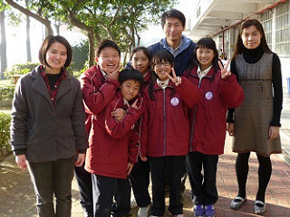

| Narrative... Project Description | Project Elements |
Project 7004 Category: 3. Business and Community Organizations  Project Title: White House Farm -- A Local Enterprise Transformation URL of your Project Web Site: http://librarywork.taiwanschoolnet.org/gsh2012/gsh7004/index.htm URL of your Project Bibliography Page: http://librarywork.taiwanschoolnet.org/gsh2012/gsh7004/e_bibliography.htm URL of School Web Site: http://www.hhjh.chc.edu.tw/ Date Project was Finished: 03/15/2012 School or Educational Institution: Hsien-Hsi Junior High School District: Changhua County City: Changhua County State or Province: n/a Country: Taiwan Names of the teachers and/or classes that participated: Jen-Chieh Hsu, Su-Hsiang Huang, Ya-Yun Huang How many students worked on this project? 5 Ages of students who worked on this project: 12~13 Project Contact Email: dotes@hhjh.chc.edu.tw Years Your School or Organization has Participated in International Schools CyberFair. 2004,2005 Description of "Our Community" Hsienhsi Township is located in Taiwan's Changhua County and is a part of the "Wind Head, Water Tail" area. The Taiwan Strait lies to the west of it, and in the past when the Changhua Coastal Industrial Park had not yet been developed, the west of the expressway was a vast expanse of tidal flats. During high tide, these tidal flats are often submerged under water. Hsienhsi Township has the smallest area as well as the smallest population in the county, and more than 70% of the residents are farmers. Because of its rural location next to the sea, its unfertile soil, as well as the strong north-eastern monsoon, only one rice crop can be grown each year; during other periods of the year, people grow crops that are more cold-resistant such as water chestnuts, garlic, or onions. Residents also raise oysters and clams, as well as go fishing on the sea to support their family. In the early 1960s, many people also engaged in ducks raising as their secondary source of income, and during the heyday of the industry there were more than a million ducks raised in the area. That is why it was once called "the Duck Kingdom". However, in recent years, the farming, fishing, aquaculture, and duck-raising industries have gradually been on the decline, and Hsienhsi Township is trying to transform itself into a tourism and recreational town that integrates its local industrial cultures.  Summary of Our Project In recent years, Taiwan's leisure and recreation culture has been on the rise, and the Lin Family Horse Stable also began engaging in the winery business and established the White Horse Winery. They have also further combined the local livestock raising, salted egg production, and winery industries to create a composite tourism farm that combines local industrial cultures called “White Horse Farm.” Our team mainly conducts research on this continually transforming local industry, from its farming activities and products, to how the founders established their businesses. Our research also extends to the area’s agricultural problems, and provides first-hand information by actually visiting the area to engage in direct observations and recording. Our Computer/Internet Access A) Percentage of students using the Internet at home: 100% B) Number of workstations with Internet access in the classroom: 35 C) Connection speed used in the classroom: 100M bps D) Number of years your classroom has been connected to the Internet: 13 years Problems We Had to Overcome (1) Lack of time: when we were working on our Cyberfair project, we were forced to temporarily put our project work aside during various holidays, our school anniversary, and midterms. However, we used our lunchtimes and holidays to compensate for the lost time, and completed our Cyberfair project through division of labor and teamwork. (2) Bad weather: the cold and rainy weather of winter, as well as typhoons, made it difficult for us to make visits to the area. However, we were able to overcome this problem of bad weather by going a few more times. (3) Lack of experience: we often run into problems when using computer software and producing reports, but our teacher would always help us solve our problems. Our Project Sound Bite |